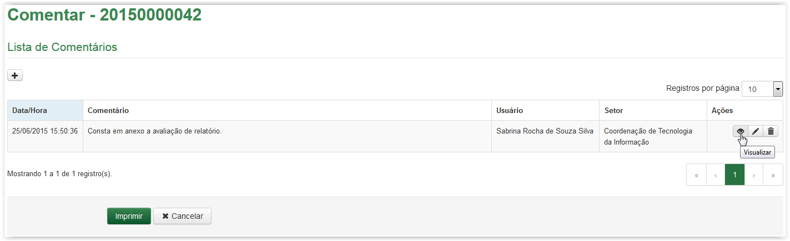
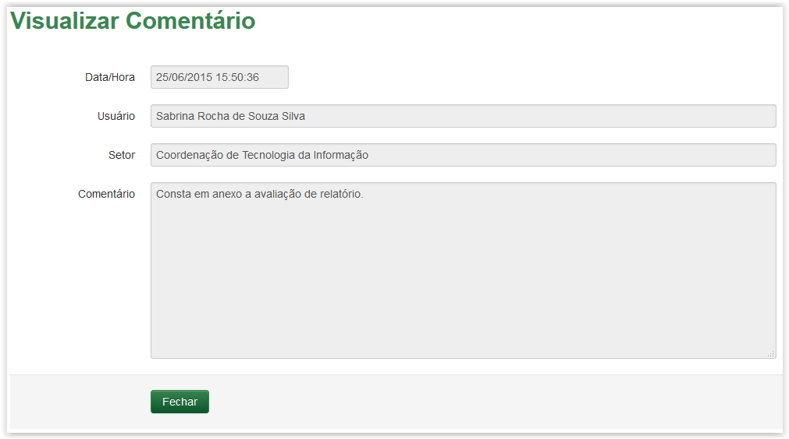

Comentar artefatos
A partir da Lista de Comentários, clique no ícone :

Visualizar comentário
A tela Visualizar Comentário apresenta a data e hora em que o comentário foi cadastrado, o nome do usuário e o setor de quem realizou tal ação e o texto do comentário. Após a visualização, clique no botão .

Visualização do Comentário
Após clicar no botão Fechar o sistema retorna para a tela com a Lista de Comentários.
Created with the Personal Edition of HelpNDoc: Full-featured Help generator